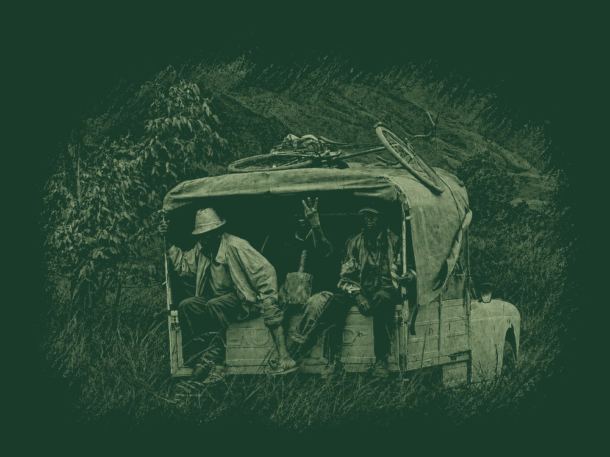
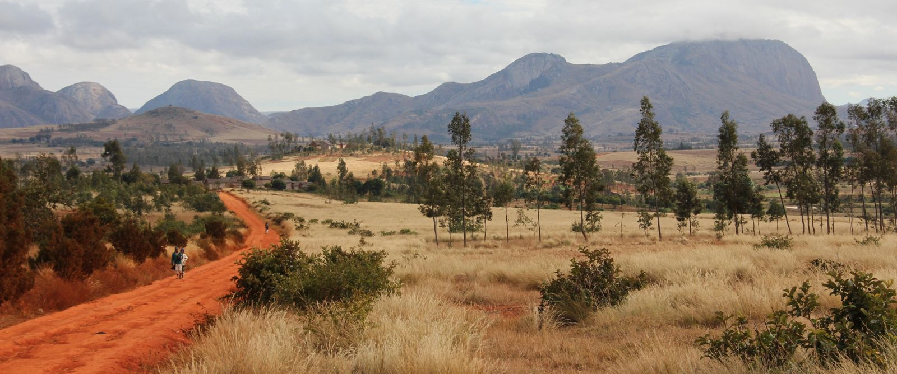
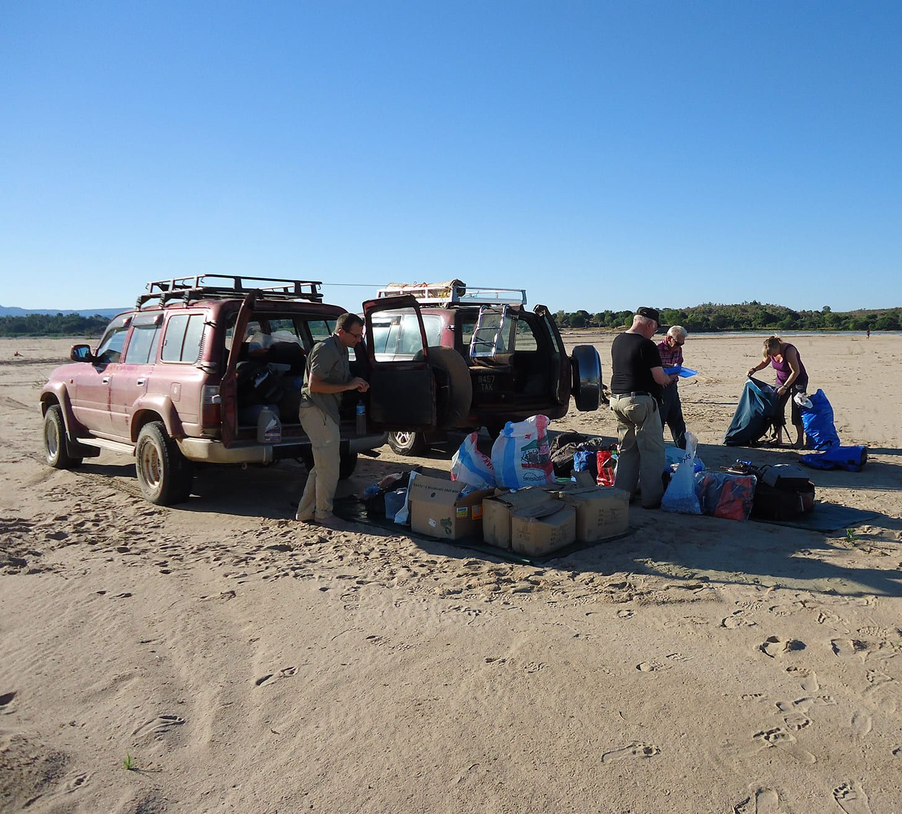
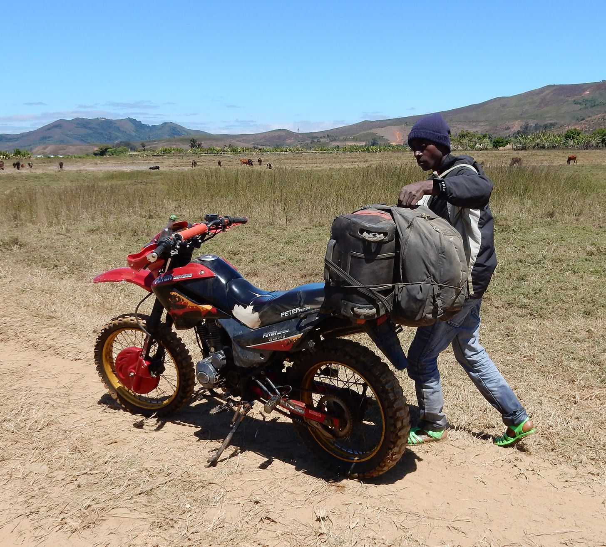
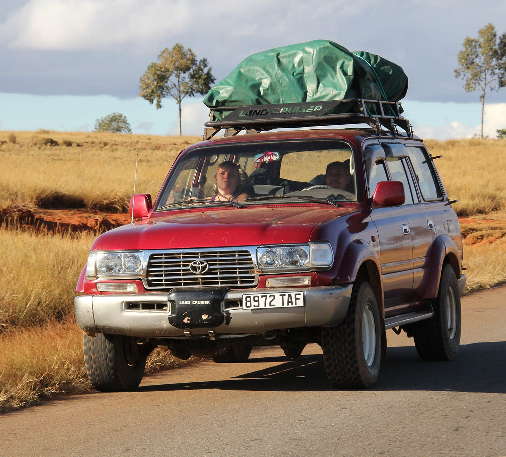
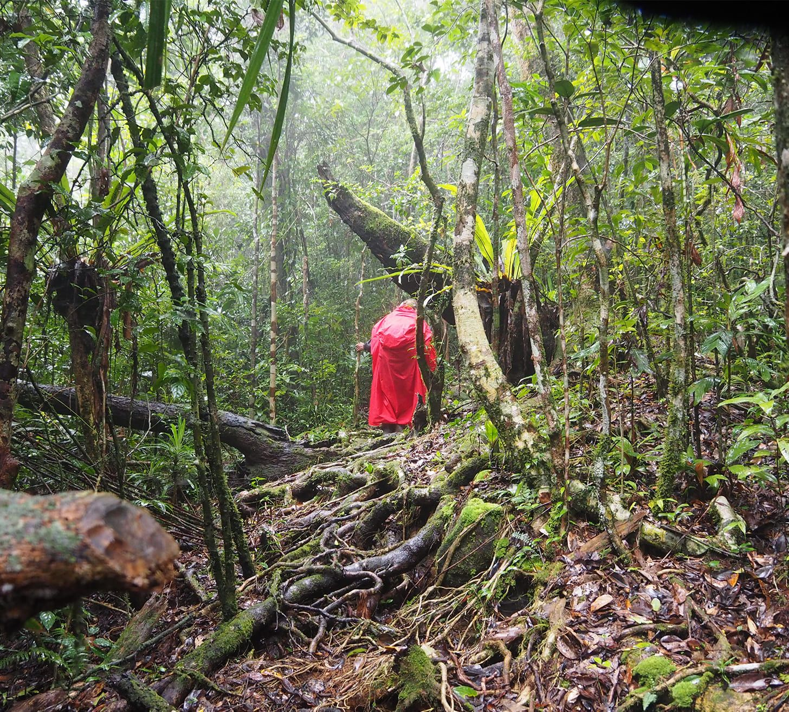

Enduro Roadtrip
Saddle up a lightweight Chinese-built motorcycle and cross Madagascar off-road with an experienced guide. You will NEVER forget this.
Read more →
30+ Years Experience

html
Travel with PRIORI, Madagascar & Beyond
PRIORI's mission is simple: to show you as many facets of Madagascar as possible, not just its landscapes, but its people, its communities, and its rhythms. Whether you travel with a group or alone, on a circuit or a motorbike, every journey we organize opens a door to the real Madagascar.
Our Approach
Unlike agencies that plan from abroad, PRIORI is based equally in Basel and Antananarivo. Our team conceives every itinerary on-site, with local knowledge that no external operator can replicate. This means we can adapt quickly, respond to changes on the ground, and build in encounters you won't find in any catalogue.
We invite you to visit cultural centres, schools, hospitals, farms, craft workshops, and traditional homes, always tailored to your interests. Travelling with us is a way to discover Madagascar's wonders while staying connected to the people who live them every day.
Our trips are built here, in Madagascar. Their very essence stays here, and so will the memories you bring home.
Ways to Travel
Madagascar is vast, no single trip can cover it all. That's why we've built distinct ways to explore the island, each with its own rhythm and depth. Browse them below, or reach out and we'll help you decide.
Structured circuits led by experienced local guides. From combined itineraries spanning multiple regions in three weeks, to slow and immersive grand tours that let you truly absorb the island, we offer a range of formats for every kind of traveller.
Explore Tours →


The real adventure. Discover Madagascar astride a motorbike, covering tracks and trails that most travellers never see. Built for those who want to feel the country under their wheels.
Take the wheel at your own pace. Our fleet of 4x4s and reliable vehicles are maintained in-country and available with or without a driver. Perfect for travellers who know their route, or those who want the flexibility to change it.
View available vehicles →


Prefer to set your own pace? Our solo travel programmes offer tailor-made itineraries built around your interests. We also offer a "Soft Landing" service for those arriving independently, free support to help you settle in and start exploring on your own terms.
Get in touch →
Not Sure Where to Start?
Tell us when you'd like to travel, what draws you to the island, and how you like to move through the world. We'll take it from there.
Contact Us →
Based in Basel & Antananarivo · Available year-round
Saddle up a lightweight Chinese-built motorcycle and cross Madagascar off-road with an experienced guide. You will NEVER forget this.
Read more →
A steam train through the tropical forest, lemurs in the wild, and the sun-drenched shores of Île Sainte-Marie, Madagascar at its most alive.
Read more →
Travelling safely in Madagascar, with a driver who knows the roads, the language, and the people.
Read more →
From amber-tinged rainforest to white-sand shores, a journey through the many faces of Madagascar's northern tip.
Read more →
Fort-Dauphin to the Jungle Express: spiny forests, wild coastline, Pangalanes pirogue rides, and a train journey through tropical rainforest few tourists ever see.
Read more →
From the High Plateaux to the vertiginous Tsingy, from giant baobabs to the deserted beaches of the Mozambique Channel, the West of Madagascar in all its diversity.
Read more →PRIORI Reisen GmbH · Holeestrasse 6 · 4054 Basel